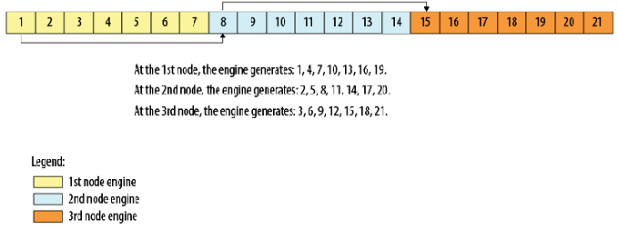

2.4.4.2. onemkl::rng::skip_ahead¶
Proceed state of engine by the skip-ahead method.
Syntax
The onemkl::rng::skip_ahead function supports the following interfaces to apply the skip-ahead method:
Common interface
Interface with a partitioned number of skipped elements
Common Interface
-
template<typename
EngineType>
voidskip_ahead(EngineType &engine, std::uint64_t num_to_skip)¶
Interface with Partitioned Number of Skipped Elements
-
template<typename
EngineType>
voidskip_ahead(EngineType &engine, std::initializer_list<std::uint64_t> num_to_skip)¶
Include Files
mkl_sycl.hpp
Input Parameters
Common Interface
Name |
Type |
Description |
|---|---|---|
engine |
|
Object of engine class, which supports the block-splitting method. |
num_to_skip |
|
Number of skipped elements. |
Interface with Partitioned Number of Skipped Elements
Name |
Type |
Description |
|---|---|---|
engine |
|
Object of engine class, which supports the block-splitting method. |
num_to_skip |
|
Partitioned number of skipped elements. |
Description
The onemkl::rng::skip_ahead function skips a given number of elements in a random sequence provided by engine. This feature is particularly useful in distributing random numbers from original engine across different computational nodes. If the largest number of random numbers used by a computational node is num_to_skip, then the original random sequence may be split by onemkl::rng::skip_ahead into non-overlapping blocks of num_to_skip size so that each block corresponds to the respective computational node. The number of computational nodes is unlimited. This method is known as the block-splitting method or as the skip-ahead method. (see Figure “Block-Splitting Method”).
Block-Splitting Method
The skip-ahead method is supported only for those basic generators that allow skipping elements by the skip-ahead method, which is more efficient than simply generating them by generator with subsequent manual skipping. See VS Notes for details.
Please note that for quasi-random basic generators the skip-ahead method works with components of quasi-random vectors rather than with whole quasi-random vectors. Therefore, to skip NS quasi-random vectors, set the num_to_skip parameter equal to the num_to_skip *dim, where dim is the dimension of the quasi-random vector.
When the number of skipped elements is greater than 263
the interface with the partitioned number of skipped elements is
used. Prior calls to the function represent the number of skipped
elements with the list of size n as shown below:
num_to_skip[0]+ num_to_skip[1]*264+
num_to_skip[2]* 2128+ …
+num_to_skip[n-1]*264*(n-1) ;
When the number of skipped elements is less than 263 both interfaces can be used.
The following code illustrates how to initialize three independent streams using the onemkl::rng::skip_ahead function:
Code for Block-Splitting Method
...
// Creating 3 identical engines
onemkl::rng::mcg31m1 engine_1(queue, seed);
onemkl::rng::mcg31m1 engine_2(queue, engine_1);
onemkl::rng::mcg31m1 engine_3(queue, engine_2);
// Skipping ahead by 7 elements the 2nd engine
onemkl::rng::skip_ahead(engine_2, 7);
// Skipping ahead by 14 elements the 3nd engine
onemkl::rng::skip_ahead(engine_3, 14);
...
Code for Block-Splitting Method with Partitioned Number of Elements
// Creating first engine
onemkl::rng::mrg32k3a engine_1(queue, seed);
// To skip 2^64 elements in the random stream number of skipped elements should be
/represented as num_to_skip = 2^64 = 0 + 1 * 2^64
std::initializer_list<std::uint64_t> num_to_skip = {0, 1};
// Creating the 2nd engine based on 1st. Skipping by 2^64
onemkl::rng::mrg32k3a engine_2(queue, engine_1);
onemkl::rng::skip_ahead(engine_2, num_to_skip);
// Creating the 3rd engine based on 2nd. Skipping by 2^64
onemkl::rng::mrg32k3a engine_3(queue, engine_2);
onemkl::rng::skip_ahead(engine_3, num_to_skip);
...
Parent topic: Service Routines